1.
AugMix
Performs the AugMix data augmentation technique.
Original
Augmented
Original
Augmented
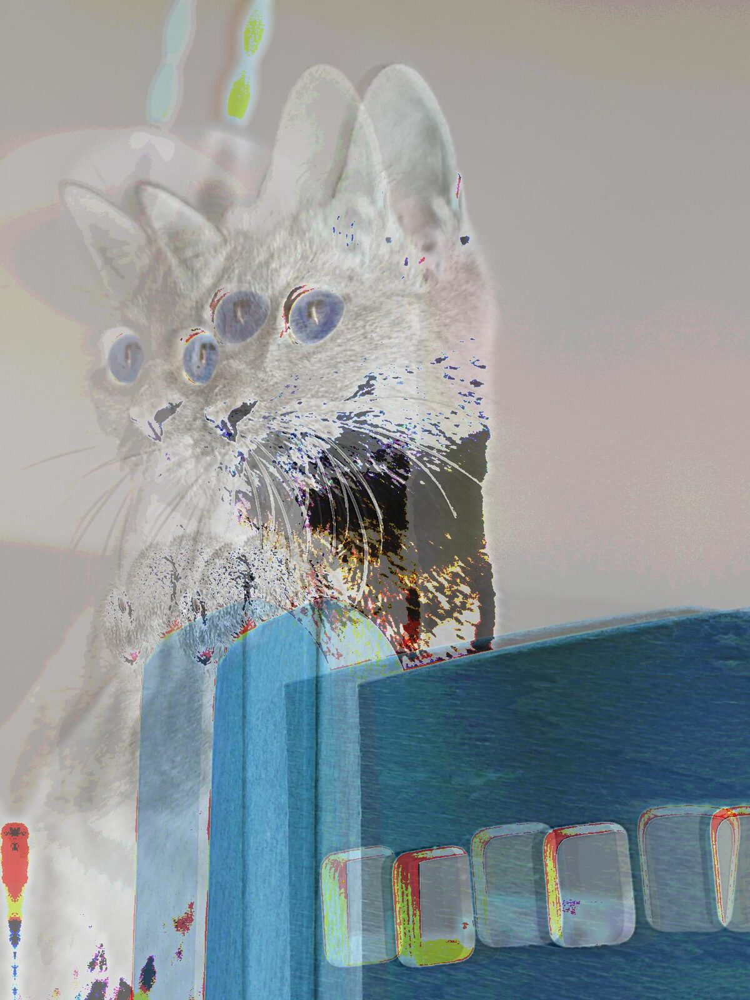
keras_cv.layers.AugMix(
value_range=(0, 255),
severity=0.3,
num_chains=3,
chain_depth=[1, 3],
alpha=1.0,
seed=None
)
2.
AutoContrast
Performs the AutoContrast operation on the image.
PHOTOMETRY
Original
Augmented
keras_cv.layers.AutoContrast([0,255])
3.
ChannelShuffle
Shuffle channels of the input image.
PHOTOMETRY
Original
Augmented
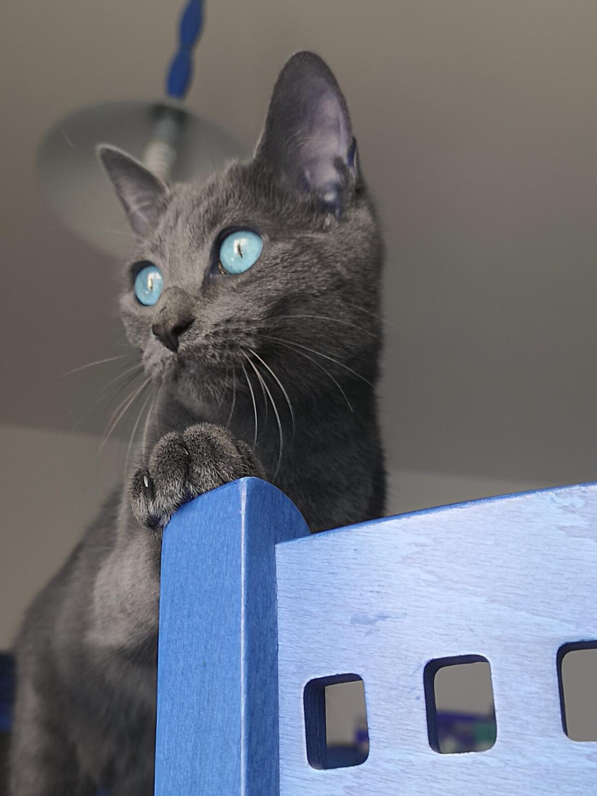
Original
Augmented
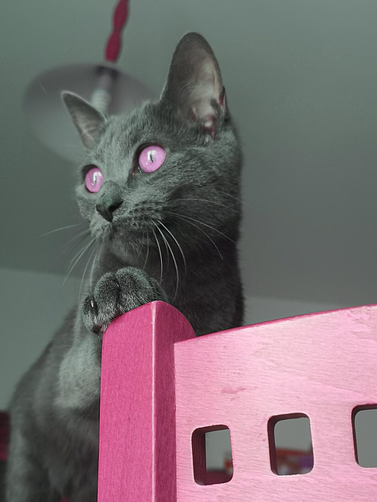
keras_cv.layers.ChannelShuffle(groups=3, seed=None)
4.
CutMix
Implements the CutMix data augmentation technique.
MIXED SAMPLE
Original
Augmented
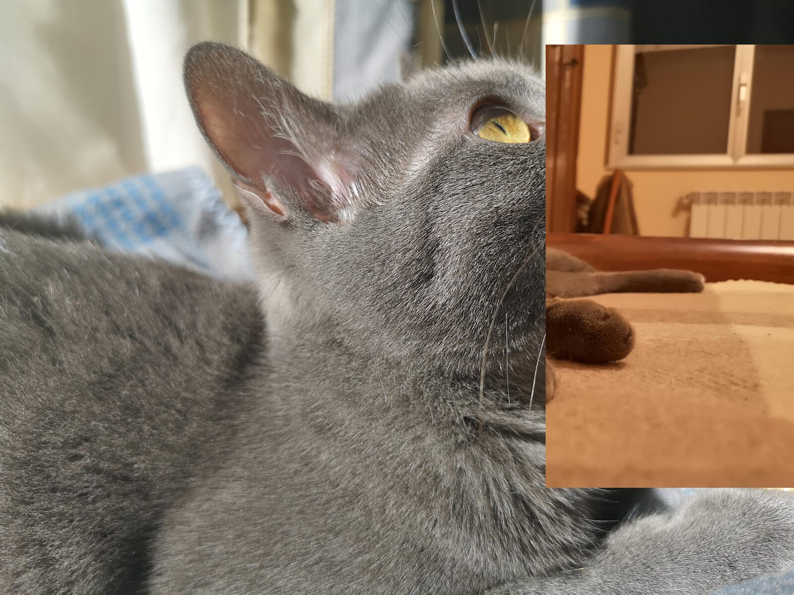
Original
Augmented
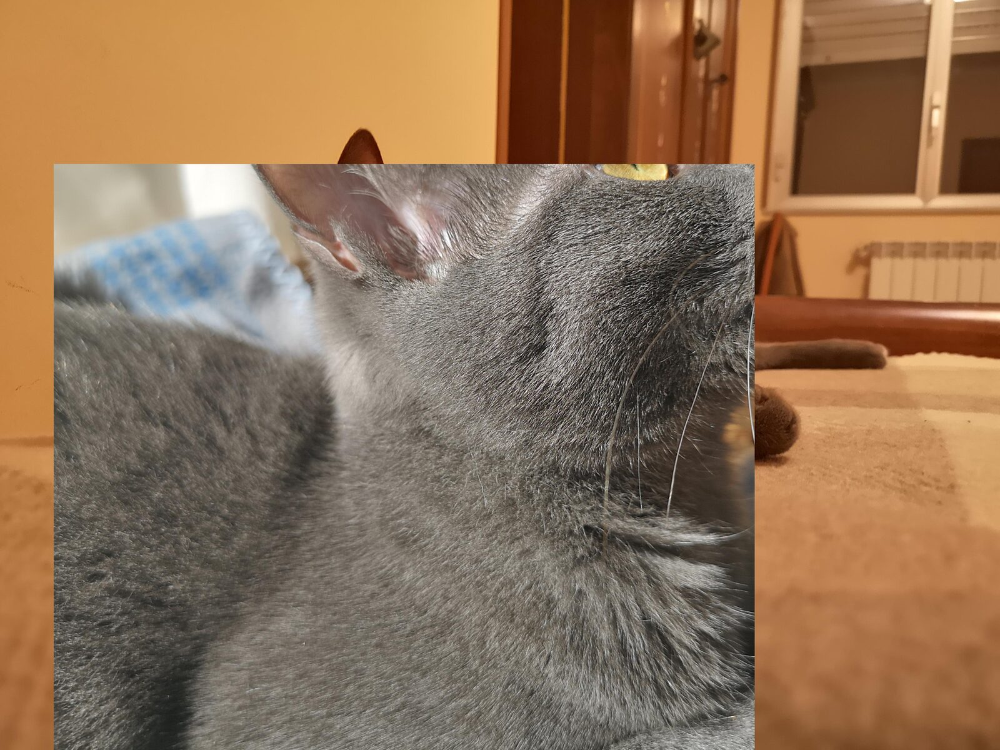
# images
img_1 = tf.keras.utils.load_img(path + '024.jpg')
img_2 = tf.keras.utils.load_img(path + '025.jpg')
img_1 = tf.keras.utils.img_to_array(img_1)
img_2 = tf.keras.utils.img_to_array(img_2)
images = np.array([img_1, img_2])
labels = np.array([[0], [1]])
labels = tf.one_hot(labels.squeeze(), 2)
# aug
cutmix = keras_cv.layers.preprocessing.cut_mix.CutMix(10)
output = cutmix({"images": images[:2], "labels": labels[:2]})
5.
Equalization
Performs histogram equalization on a channel-wise basis.
PHOTOMETRY
Original
Augmented
keras_cv.layers.Equalization(value_range=(0, 255), bins=256)
6.
FourierMix
Implements the FMix data augmentation technique.
MIXED SAMPLE
Original
Augmented
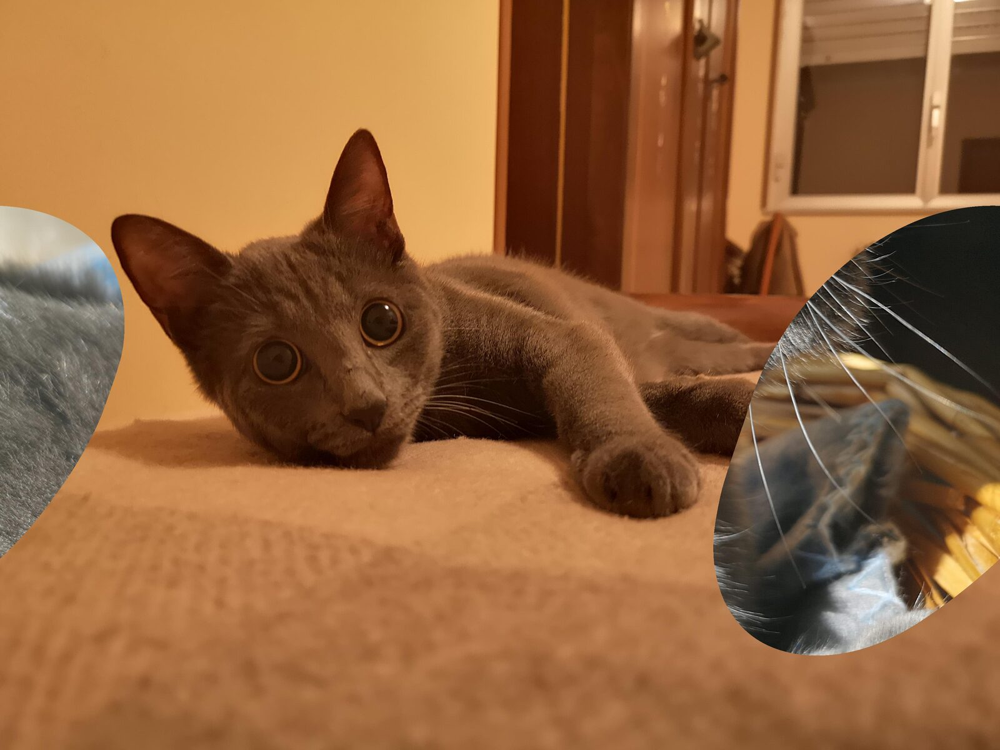
Original
Augmented
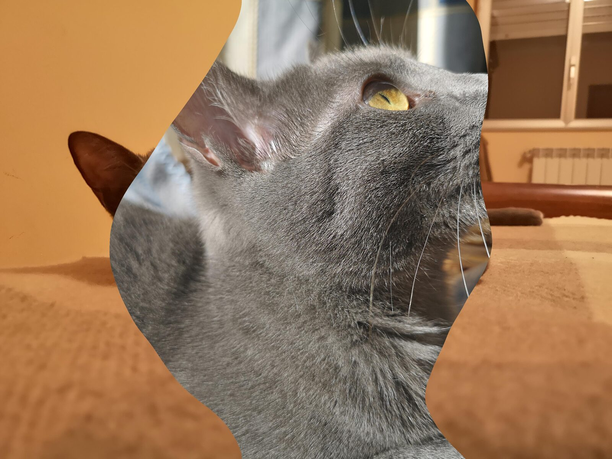
# images
img_1 = tf.keras.utils.load_img(path + '024.jpg')
img_2 = tf.keras.utils.load_img(path + '025.jpg')
img_1 = tf.keras.utils.img_to_array(img_1)
img_2 = tf.keras.utils.img_to_array(img_2)
images = np.array([img_1, img_2])
labels = np.array([[0], [1]])
labels = tf.one_hot(labels.squeeze(), 2)
# aug
fourier_mix = keras_cv.layers.preprocessing.FourierMix(0.5)
output = fourier_mix({"images": images[:2], "labels": labels[:2]})
7.
Grayscale
Transforms RGB images to Grayscale images.
PHOTOMETRY
Original
Augmented
keras_cv.layers.Grayscale(output_channels=1)
8.
GridMask
Implements GridMask augmentation.
DROPOUT
Original
Augmented
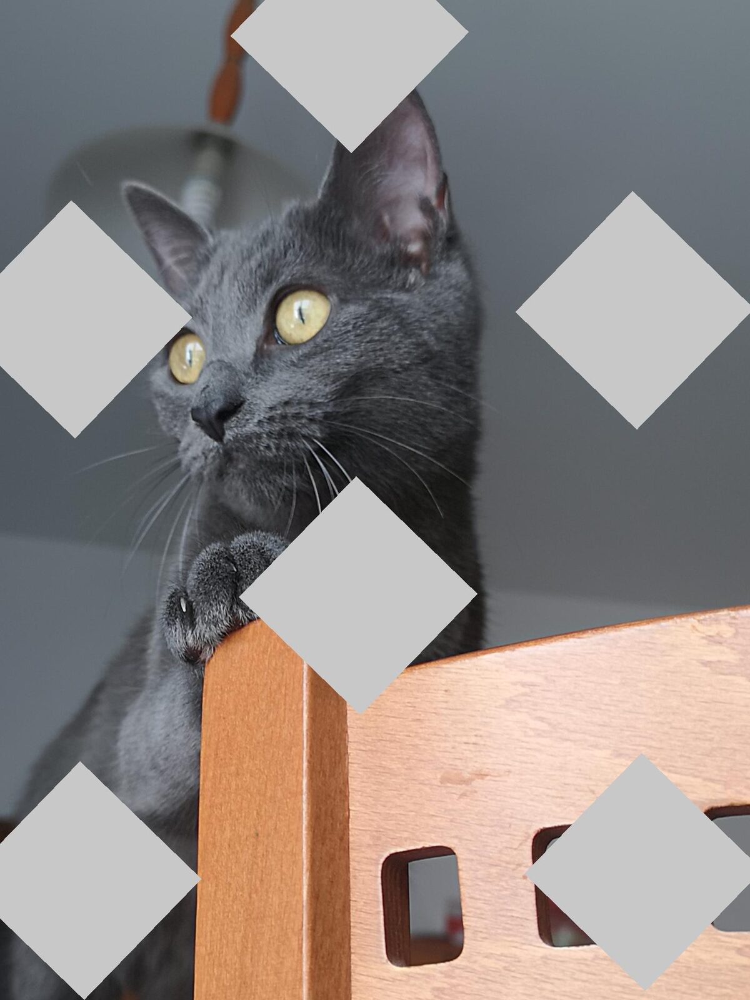
keras_cv.layers.GridMask(
ratio_factor=(0, 0.5),
rotation_factor=0.15,
fill_mode="constant",
fill_value=200,
seed=None,
)
9.
JitteredResize
Implements resize with scale distortion.
BASIC GEOMETRY
Original
Augmented
keras_cv.layers.JitteredResize(
target_size=(1000,800),
scale_factor=(0.8, 1.25),
crop_size=None,
bounding_box_format=None,
interpolation="bilinear",
seed=None
)
10.
MixUp
Performs the MixUp data augmentation technique. References: “mixup: Beyond Empirical Risk Minimization” , “Bag of Freebies for Training Object Detection Neural Networks” .
MIXED SAMPLE
Original
Augmented
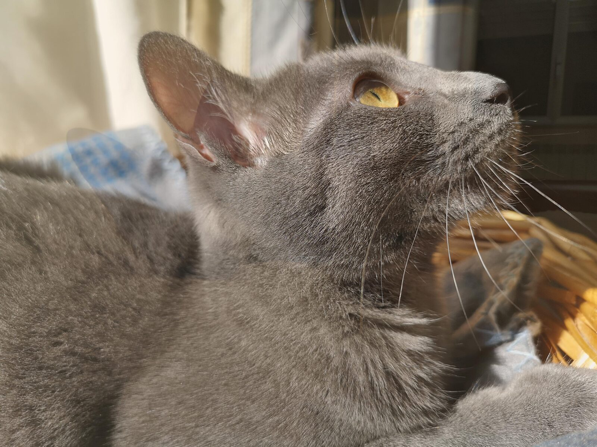
Original
Augmented
# images
img_1 = tf.keras.utils.load_img(path + '024.jpg')
img_2 = tf.keras.utils.load_img(path + '025.jpg')
img_1 = tf.keras.utils.img_to_array(img_1)
img_2 = tf.keras.utils.img_to_array(img_2)
images = np.array([img_1, img_2])
labels = np.array([[0], [1]])
labels = tf.one_hot(labels.squeeze(), 2)
# aug
mixup = keras_cv.layers.preprocessing.MixUp(10)
output = mixup({"images": images[:2], "labels": labels[:2]})
11.
Posterization
Reduces the number of bits for each color channel. References: “AutoAugment” , “RandAugment” .
STYLE FILTER
Original
Augmented
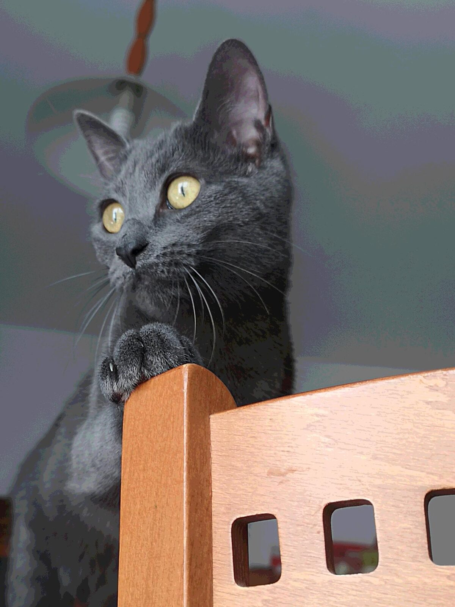
keras_cv.layers.Posterization(value_range=(0, 255), 4)
12.
RandAugment
Performs the Rand Augment operation on the input image.
Original
Augmented
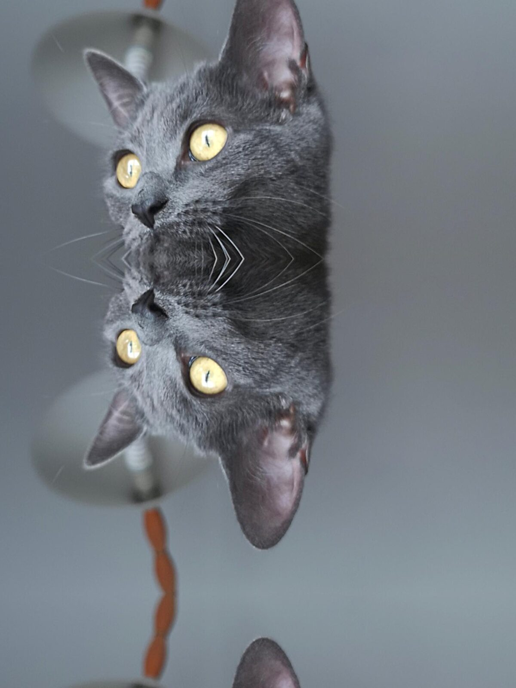
Original
Augmented
keras_cv.layers.RandAugment(
value_range=(0, 255),
augmentations_per_image=3,
magnitude=0.5,
magnitude_stddev=0.15,
rate=0.9090909090909091,
geometric=True,
seed=None
)
13.
RandomAugmentationPipeline
Constructs a pipeline based on provided arguments.
14.
RandomChannelShift
Randomly shifts values for each channel of the input image(s).
PHOTOMETRY
Original
Augmented
Original
Augmented
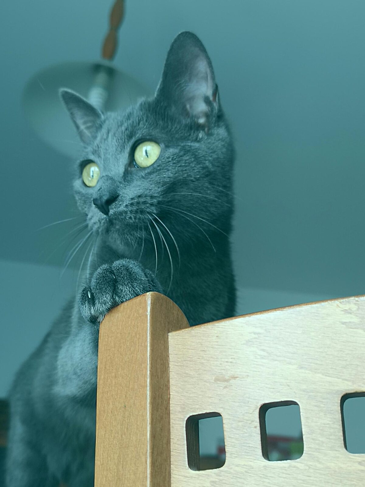
keras_cv.layers.RandomChannelShift(value_range=[0, 255], factor=(0.2, 0.2), channels=3, seed=None)
15.
RandomColorDegeneration
Randomly performs the color degeneration operation. The sharpness operation first converts an image to gray scale, then back to color. It then takes a weighted average between original image and the degenerated image.
PHOTOMETRY
Original
Augmented
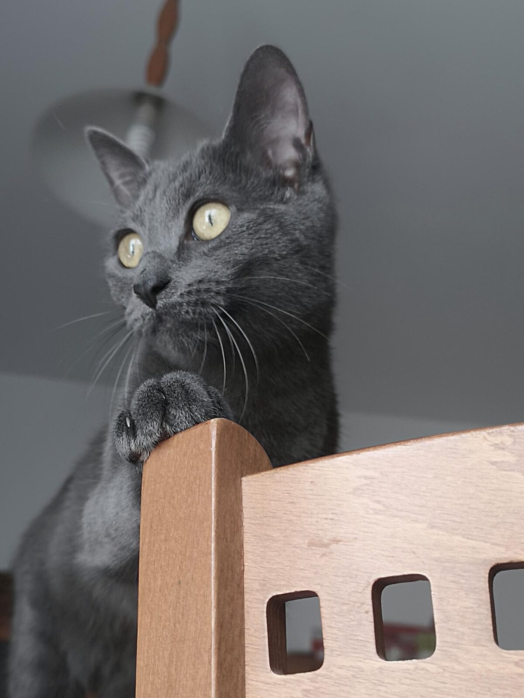
keras_cv.layers.RandomColorDegeneration(factor=(0.4, 0.4), seed=None)
16.
RandomCutout
Randomly cuts out rectangles from images and fills them.
DROPOUT
Original
Augmented
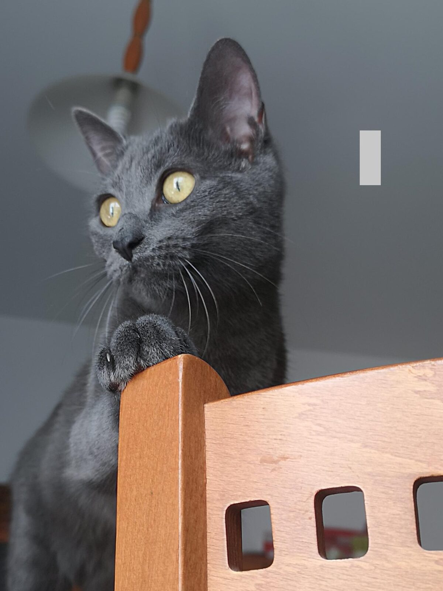
keras_cv.layers.RandomCutout(height_factor=0.1, width_factor=0.3, fill_mode="constant",
fill_value=200, seed=None)
Original
Augmented
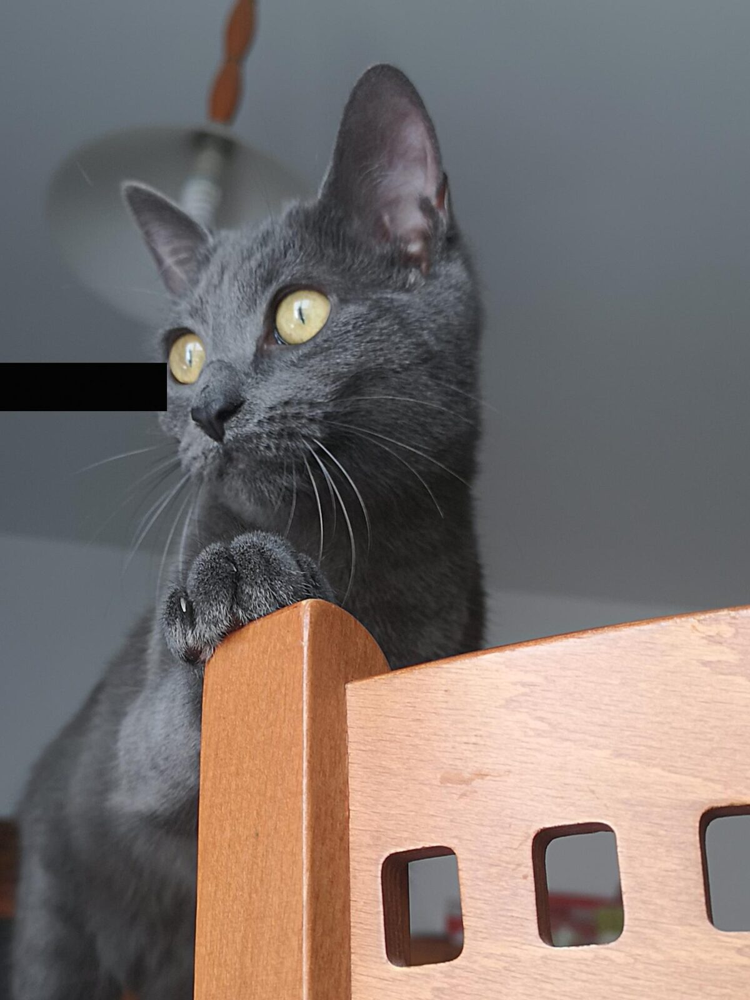
keras_cv.layers.RandomCutout(height_factor=0.1, width_factor=0.3, fill_mode='gaussian_noise',
fill_value=0.0, seed=None)
17.
RandomHue
Randomly adjusts the hue.
PHOTOMETRY
Original
Augmented
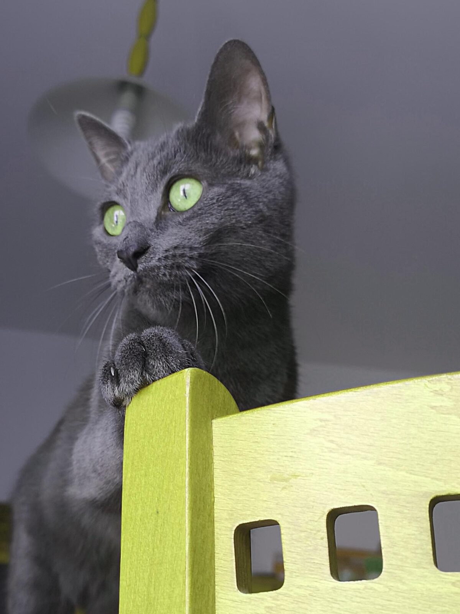
keras_cv.layers.RandomHue(factor=0.3, value_range=[0,255], seed=None)
18.
RandomSaturation
Randomly adjusts the saturation.
PHOTOMETRY
Original
Augmented
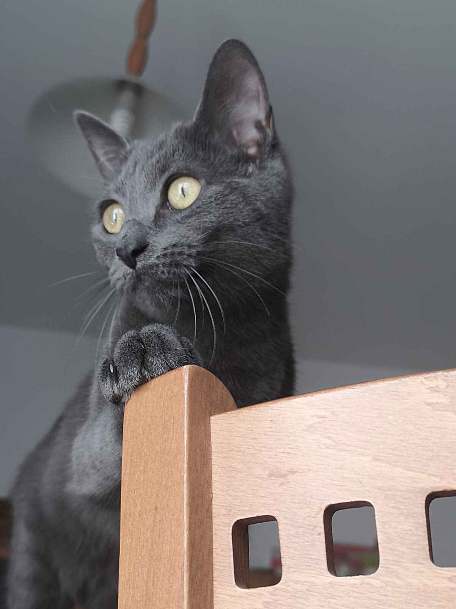
keras_cv.layers.RandomSaturation(factor=(0.4, 0.4), seed=None)
Original
Augmented
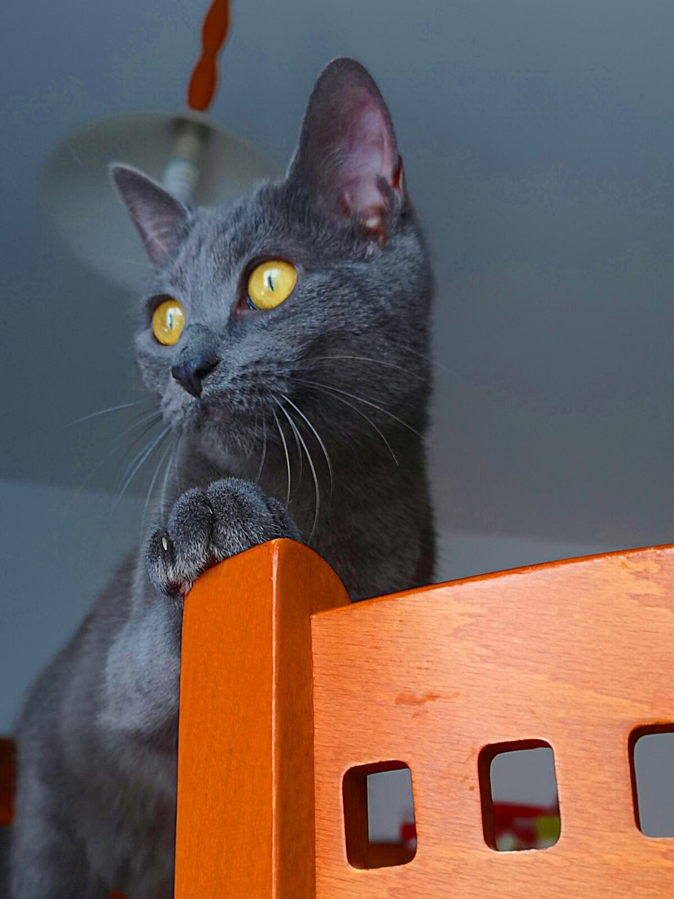
keras_cv.layers.RandomSaturation(factor=(0.7, 0.7), seed=None)
19.
RandomSharpness
Randomly performs the sharpness operation. This operation first performs a blur operation, then blends between the original image and the blurred image. It makes the edges of an image less sharp than they were in the original image. Reference: ImageEnhance .
SHARPNESS
Original
Augmented
keras_cv.layers.RandomSharpness(factor=(1, 1), value_range=[0, 255], seed=None)
20.
RandomShear
A preprocessing layer which randomly shears images during training. This layer will apply random shearings to each image, filling empty space according to fill_mode.
BASIC GEOMETRY
Original
Augmented
keras_cv.layers.RandomShear(
x_factor=(0.3, 0.3),
y_factor=None,
interpolation="bilinear",
fill_mode="reflect",
fill_value=0.0,
bounding_box_format=None,
seed=None
)
Original
Augmented
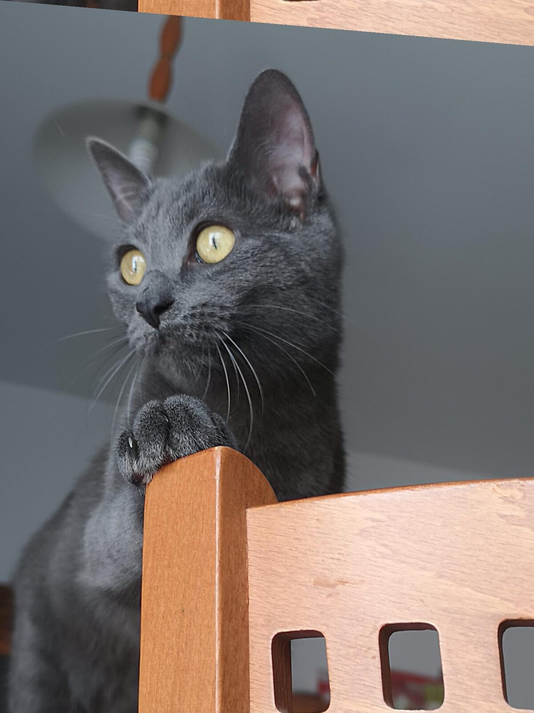
keras_cv.layers.RandomShear(
x_factor=None,
y_factor=0.4,
interpolation="bilinear",
fill_mode="wrap",
fill_value=0.0,
bounding_box_format=None,
seed=None
)
21.
Resizing
A preprocessing layer which resizes the image.
BASIC GEOMETRY
Original
Augmented
keras_cv.layers.Resizing(
height=300,
width=400,
interpolation="bilinear",
crop_to_aspect_ratio=False,
pad_to_aspect_ratio=False,
bounding_box_format=None,
)
22.
Solarization
Applies (max_value - pixel + min_value) for each pixel in the image. When created without threshold parameter, the layer performs solarization to all values. When created with specified threshold the layer only augments pixels that are above the threshold value. References: AutoAugment , RandAugment .
PHOTOMETRY
Original
Augmented
keras_cv.layers.Solarization(value_range=(0,255), addition_factor=0.0, threshold_factor=0.0, seed=None)